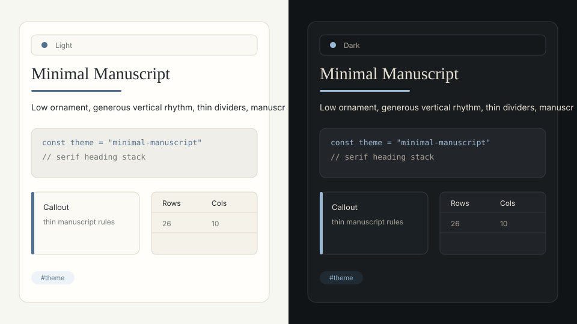
Minimal Manuscript
Quiet long-form writing surface inspired by Minimal and Shimmering Focus.
Package JSONGenerated previews for 10 original remote theme packages. Each package supports light and dark modes.
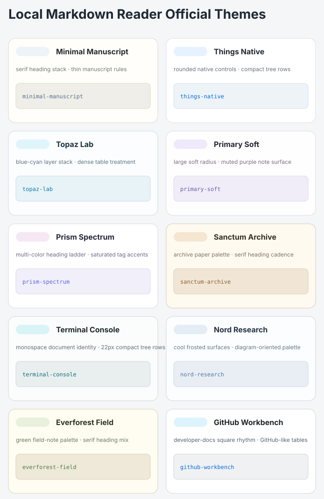

Quiet long-form writing surface inspired by Minimal and Shimmering Focus.
Package JSON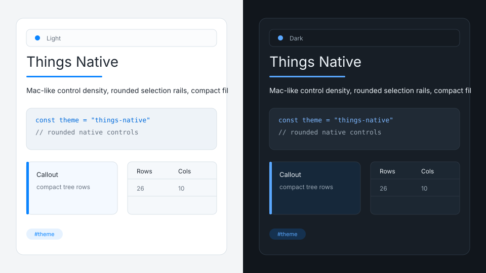
Native productivity notes with crisp controls and compact navigation.
Package JSON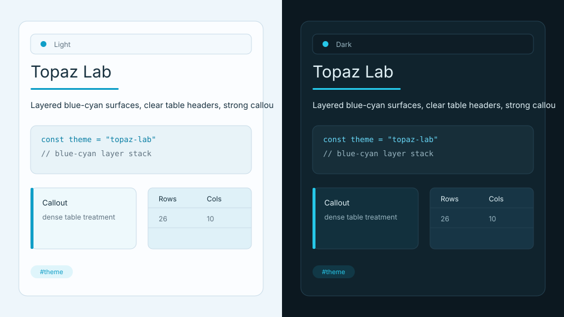
Information-rich research theme inspired by Blue Topaz and ITS.
Package JSON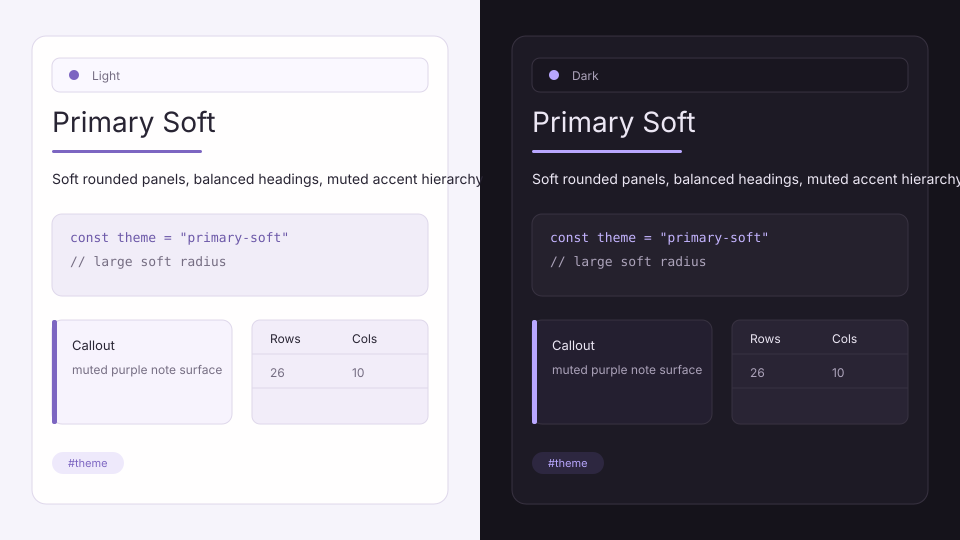
Soft knowledge-base theme inspired by Primary and Sanctum.
Package JSON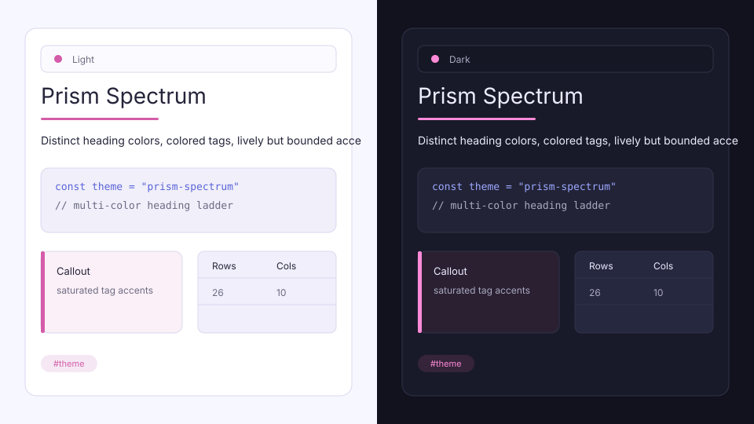
Colorful structured notes inspired by Prism and AnuPpuccin.
Package JSON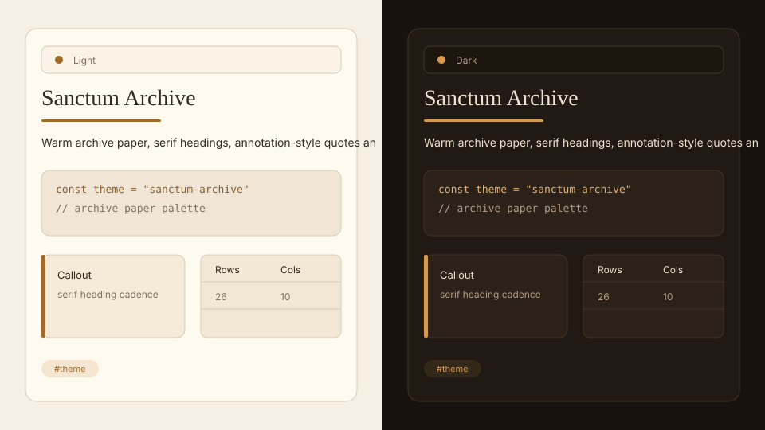
Paper archive theme inspired by Sanctum and Notation.
Package JSON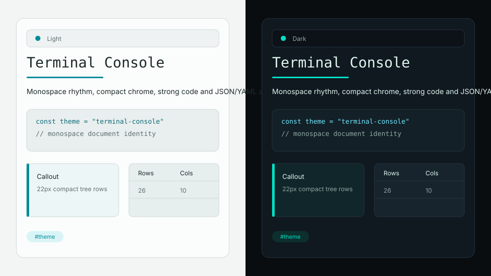
Command-line reading surface inspired by Cybertron, Dracula, and popular terminal themes.
Package JSON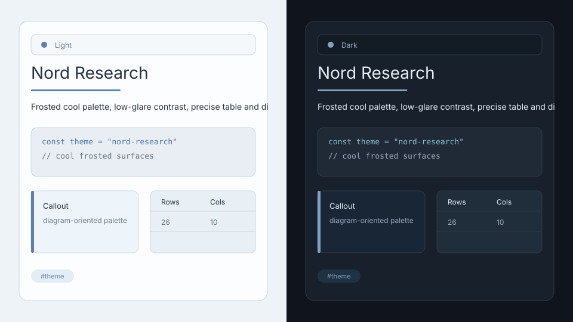
Cool research reading theme inspired by Obsidian Nord and Noctis.
Package JSON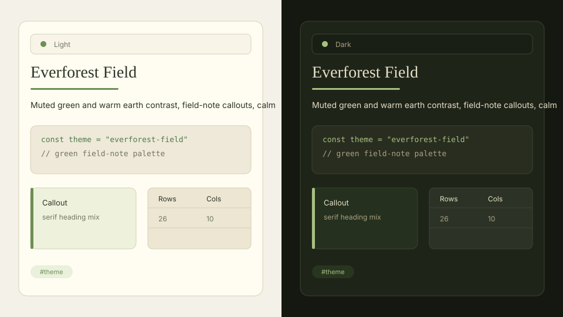
Muted green field-note theme inspired by Everforest and Gruvbox.
Package JSON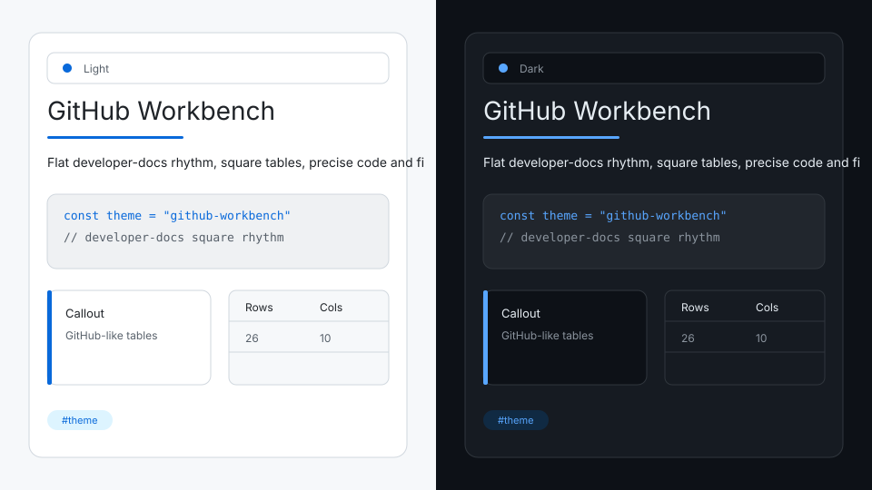
Developer documentation theme inspired by Gitsidian and GitHub Theme.
Package JSON